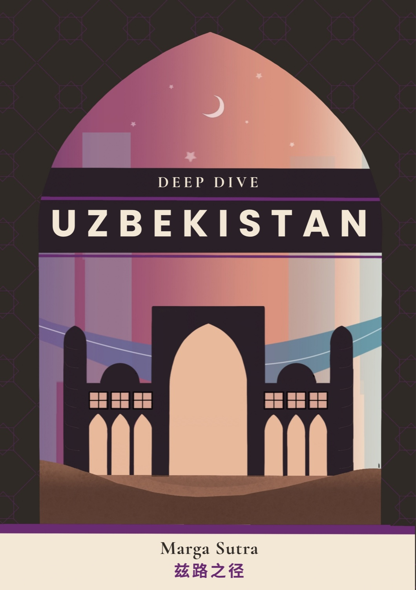

The distinct one
Final Article
The closing piece, with its own layout pulling the deep dive together.
Read the final article ↗These open on WeChat. The three city pieces share one design; the final article is its own.
The closing piece, with its own layout pulling the deep dive together.
Read the final article ↗Tashkent, Samarkand, and Bukhara, laid out on the same template.
A printed magazine for the deep dive, with me as the main designer. All 52 pages are online.

Marga Sutra opens like a book. Flip through all 52 pages.
Open the magazine →